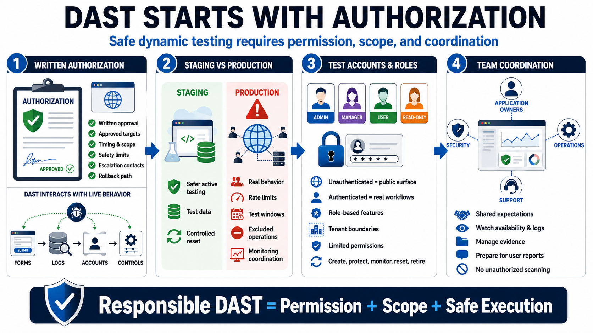

Authorized Scope and Test Planning
Connecting to LMS... Progress: in progress

Narration
DAST requires written authorization because it interacts with live application behavior. Even when the intent is defensive, scanning can create traffic, trigger logs, exercise forms, use accounts, touch data, and interact with controls. A test plan should define approved targets, environments, timing, accounts, exclusions, safety limits, data handling expectations, escalation contacts, and rollback paths. Authorization protects the organization, the testers, and the application owners.
Production and staging have different tradeoffs. Staging may be safer for active testing because it can use test data and controlled reset procedures. Production may reveal real configuration, routing, authentication, and deployment behavior that staging does not fully match. If production testing is approved, scope, rate limits, test windows, excluded operations, monitoring coordination, and support contacts become especially important.
DAST planning should include test accounts and roles. Unauthenticated scanning sees only public behavior. Authenticated testing can exercise account-specific workflows, role-based features, tenant boundaries, and session behavior. Those accounts should use test data, limited permissions, and controlled credentials. The plan should also describe how accounts are created, protected, monitored, reset, and retired after testing.
Coordination matters because DAST touches several teams. Application owners understand business impact. Security teams manage testing intent and evidence. Operations teams watch availability and logs. Support teams may receive user reports if testing is visible. Unauthorized scanning is not acceptable because it ignores ownership, safety, legal boundaries, and operational risk. Responsible DAST begins with clear permission and shared expectations.